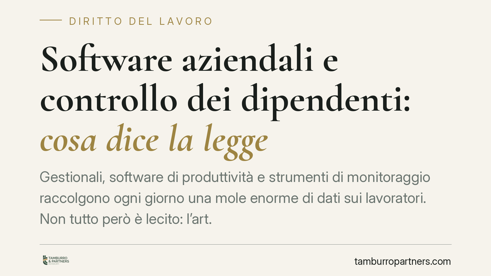

Software aziendali e controllo dei dipendenti: cosa dice la legge
Gestionali, software di produttività e strumenti di monitoraggio raccolgono ogni giorno una mole enorme di dati sui lavoratori. Non tutto però è lecito: l'art. 4 dello Statuto dei lavoratori impone paletti precisi. Capire quando un software diventa uno strumento di controllo vietato è oggi decisivo per evitare contenziosi, sanzioni e prove inutilizzabili in giudizio.

Il quadro di partenza
Ogni software aziendale lascia tracce: log di accesso, cronologia delle attività, tempi di utilizzo, email, posizione dei dispositivi. Questi dati, aggregati, possono trasformarsi in un sistema di controllo capillare della prestazione lavorativa.
La legge non vieta l'uso di questi strumenti, ma ne disciplina rigorosamente le condizioni. Il perno resta l'art. 4 della Legge 300/1970 (Statuto dei lavoratori), profondamente riscritto dal D.Lgs. 151/2015 nell'ambito del cosiddetto Jobs Act.
Inquadramento normativo
L'art. 4 distingue tre situazioni, ed è una distinzione da tenere a mente.
Il comma 1 riguarda gli strumenti installati per esigenze organizzative, produttive, di sicurezza del lavoro o di tutela del patrimonio aziendale, dai quali deriva anche la possibilità di controllare a distanza l'attività dei lavoratori. In questi casi l'impianto è lecito solo previo accordo con le rappresentanze sindacali oppure, in mancanza, previa autorizzazione della sede territoriale dell'Ispettorato Nazionale del Lavoro (INL).
Il comma 2 introduce un'eccezione importante: non serve accordo né autorizzazione per gli strumenti utilizzati dal lavoratore per *rendere la prestazione* (ad esempio il PC o lo smartphone aziendale) e per gli strumenti di registrazione degli accessi e delle presenze. Attenzione però: l'esenzione copre lo strumento in sé, non ogni software di monitoraggio che vi si aggiunge. Un sistema che traccia produttività, screenshot o navigazione va oltre il semplice "strumento di lavoro" e rientra nel comma 1.
Il comma 3 è decisivo in giudizio: i dati raccolti sono utilizzabili a *tutti i fini connessi al rapporto di lavoro* (anche disciplinari) solo se il lavoratore ha ricevuto adeguata informativa sulle modalità d'uso e di controllo, e nel rispetto del Regolamento UE 2016/679 (GDPR).
A questo si aggiunge il D.Lgs. 104/2022 (Decreto Trasparenza), che impone al datore di informare il lavoratore quando l'esecuzione della prestazione è organizzata o monitorata tramite sistemi decisionali o di controllo automatizzati, specificandone logiche di funzionamento e categorie di dati trattati.
Il fronte dell'intelligenza artificiale e della privacy
Il tema si è spostato sui software che analizzano comportamenti ed emozioni. Il Garante per la protezione dei dati personali ha più volte ritenuto illecite le analisi del cosiddetto *sentiment* o dello stress dei dipendenti basate su dati raccolti in modo massivo: valutare lo stato emotivo di un lavoratore tramite software è un trattamento sproporzionato e privo di base giuridica adeguata.
La direzione è confermata dal Regolamento UE 2024/1689 (AI Act), che qualifica come ad alto rischio i sistemi di IA impiegati nella gestione del personale e vieta, in ambito lavorativo, gli strumenti di riconoscimento delle emozioni, salve ristrette eccezioni.
Sul versante dei controlli difensivi – quelli attivati per accertare un illecito già sospettato – la giurisprudenza di legittimità ha chiarito un principio: il controllo mirato e successivo al sospetto di una condotta illecita può essere ammesso, ma resta soggetto ai limiti di proporzionalità e al rispetto della dignità e riservatezza del lavoratore. Non può diventare un monitoraggio generalizzato e preventivo di email e comunicazioni. Si tratta di un orientamento consolidato, da verificare caso per caso con gli estremi delle pronunce più recenti.
Implicazioni pratiche
Per il datore di lavoro il rischio non è solo sanzionatorio. Il profilo più concreto è l'inutilizzabilità probatoria: un dato raccolto senza accordo, autorizzazione o informativa non può fondare un licenziamento o una sanzione disciplinare. Il provvedimento rischia l'annullamento e la prova si rivela inservibile proprio quando serve.
Sul piano sanzionatorio, le violazioni dell'art. 4 sono presidiate dall'apparato dell'art. 38 della L. 300/1970; la natura e l'entità della sanzione vanno però verificate in concreto, anche alla luce degli interventi di depenalizzazione che hanno riguardato questa materia. Consigliamo di non dare per scontata la rilevanza penale e di valutare ogni ipotesi con il supporto di un professionista.
Cosa fare in concreto
- Mappate i software in uso e distinguete quelli che rendono possibile la prestazione da quelli che monitorano produttività, navigazione o comportamenti: solo i secondi richiedono accordo o autorizzazione.
- Stipulate l'accordo sindacale con le RSA/RSU oppure richiedete l'autorizzazione alla sede territoriale dell'INL *prima* di attivare qualsiasi funzione di controllo a distanza.
- Consegnate un'informativa chiara e documentata su finalità, modalità di controllo e trattamento dei dati, integrando quanto richiesto dal Decreto Trasparenza sui sistemi automatizzati.
- Escludete sentiment analysis ed emotion recognition sul personale: sono trattamenti ad altissimo rischio di illegittimità.
- Applicate il principio di proporzionalità: raccogliete il minimo indispensabile, per il tempo strettamente necessario e con finalità definite. È la bussola che orienta ogni scelta tecnologica in materia.
Il punto fermo resta questo: la tecnologia aziendale è legittima finché resta proporzionata allo scopo dichiarato e rispettosa della dignità del lavoratore. Quando eccede, i dati non valgono nulla e il contenzioso è dietro l'angolo.
Ogni storia di lavoro ha i suoi tempi.
Se gestisci HR e vuoi un confronto su contenzioso, ispezioni o licenziamenti, scrivi allo studio. Ti rispondiamo entro un giorno lavorativo.